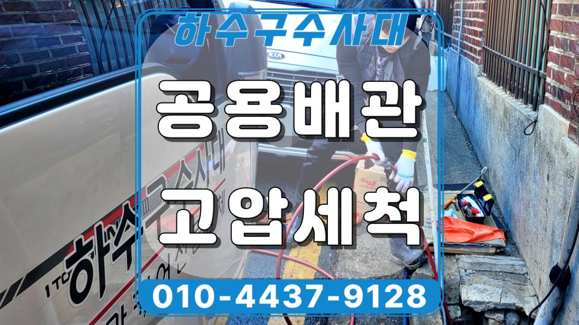
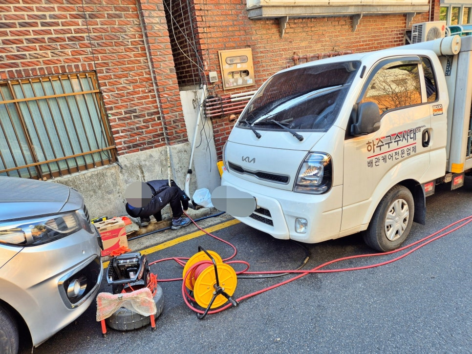
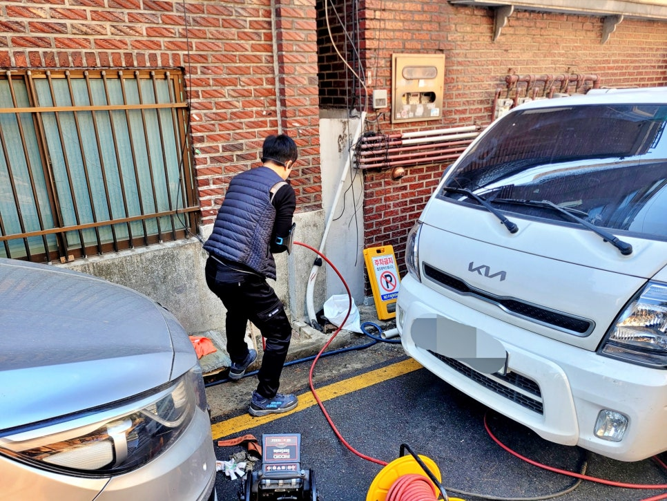
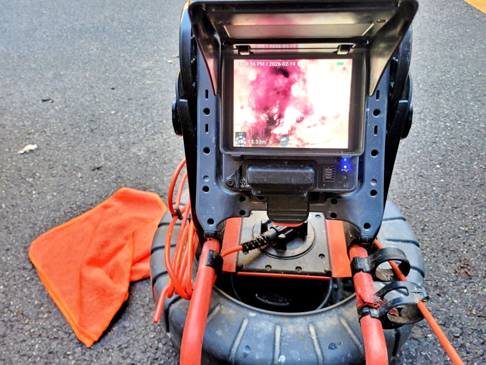
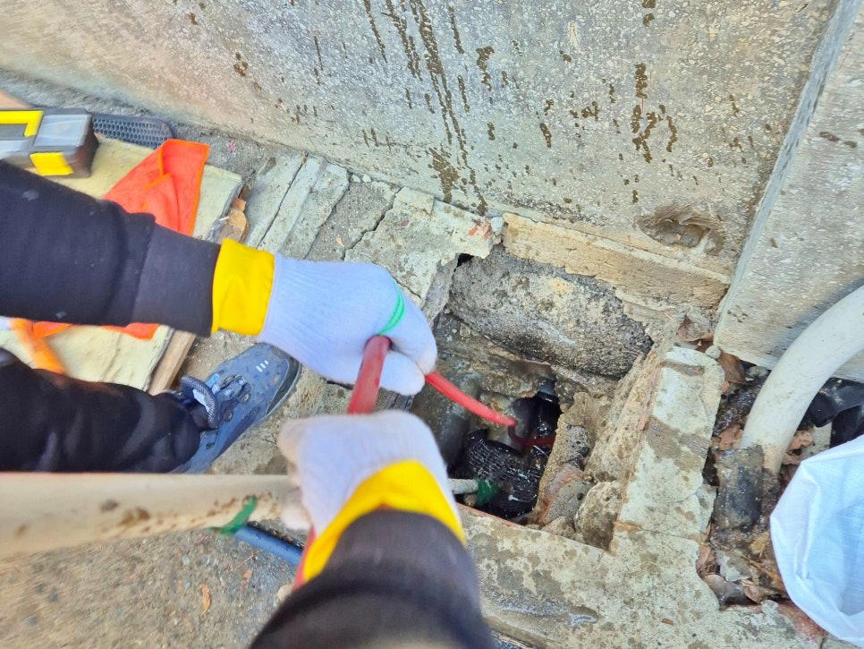
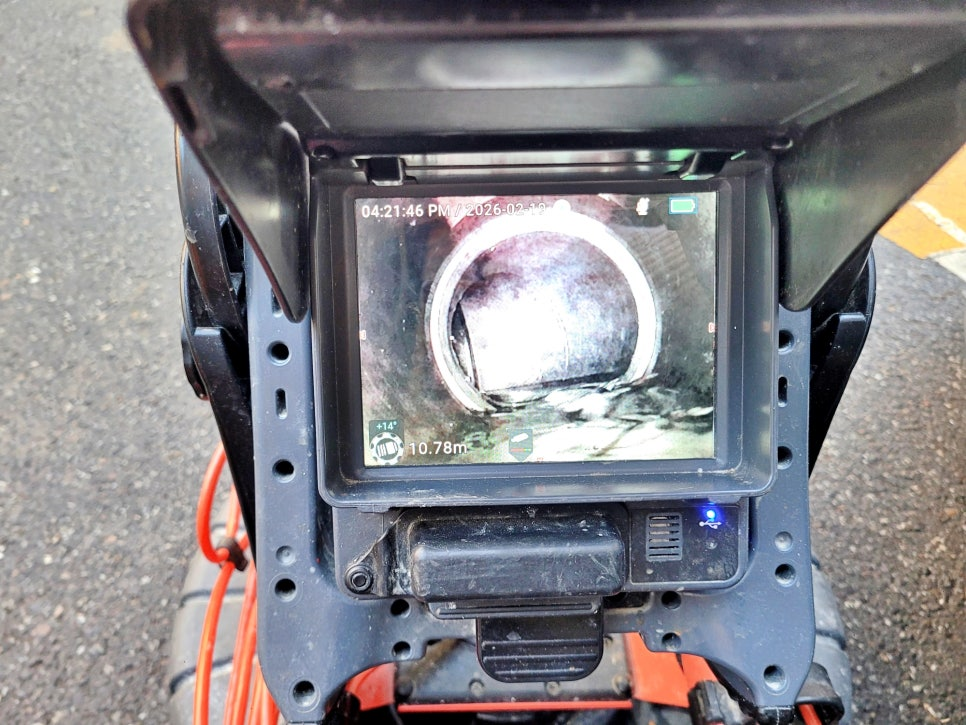
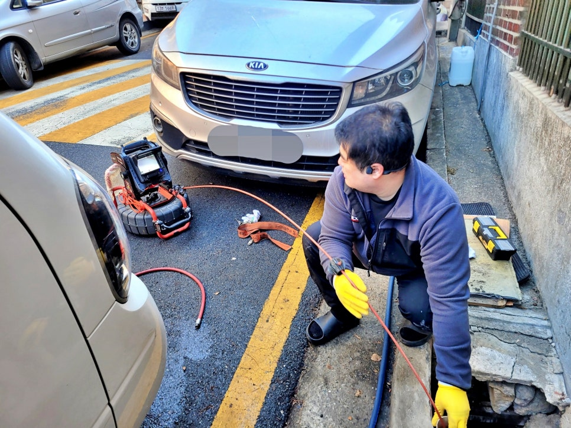

🏠 수원시 우만동 하수구역류, 공용 하수관막힘 고압세척으로 뚫었어요
수원 우만동 하수구막힘 전문 시공 후기

📋 작업 개요
- 위치: 수원 우만동, 우만동, 수원
- 서비스 유형: 하수구막힘, 배관막힘, 역류해결, 뚫는업체, 배관청소, 고압세척
- 작업 일시: 2026. 3. 12. 19:01
- 업체명: 하수구수사대 (010-5615-2118)
🔍 문제 상황
수원시 우만동 하수구역류 청소업체,
공용 하수관막힘 고압세척으로
확실하게 잘 뚫어드립니다.!!!
안녕하세요?
수원 우만동 하수구막힘 배관청소
전문업체 하수구수사대입니다.
오늘 소개드린 현장은
수원 팔달구 우만동 주택가에서
지하 공용 하수관이 역류 한다는
연락을 받고 출동해 고압세척
시공으로 해결한 사례인데요.
우만동 주택가 공용 하수구역류 현장
참고로
수원시 우만동 하수구역류 현장은 1년전
스프링 관통 장비로 통수 작업을 진행한
이력이 있었지만, 시간이 지나면서 다시
배수가 막히고 역류가 발생했습니다.
이전 포스팅에서도 여러 차례 현장
맞춤형 통수 방법에 대해 설명을
드린적이 있는데요.
과연 이번 현장은 왜 같은 문제가
반복됐는지 그 원인을 상세하게
살펴보겠습니다.

🔎 원인 분석
💡 전문가 진단: 수원시 우만동 하수구역류 청소업체,공용 하수관막힘 고압세척으로확실하게 잘 뚫어드립니다.!!!
우만동 주택가 공용 하수구역류 원인은?
공용 하수관 내벽에 쌓인 기름막
현장 도착 후 공용 하수관 상태를
내시경 카메라로 먼저 살펴보니,
배관 안쪽 벽면을 따라 오랜 기간
굳어 있던 기름 찌꺼기가 두껍게
쌓여 있는 모습이 확인됐는데요.
이 정도로 단단하게 굳은 기름막은
일반적인 스프링 통수만으로는
중간만 뚫리고 내벽에 붙어 있던
잔여물이 남기 쉬워 오래가지 않아
같은 현상이 반복되기 쉽습니다.
고압세척 후 깨끗해진 내부 모습
수원시 우만동 공용 하수구역류와
같은 경우는 근본 원인 제거에 초점을
맞춰 고압세척 장비를 사용해 막힌
곳을 뚫는 동시에 내벽까지 깨끗이
청소해야 오랜 시간 문제가 없는데요.
이번에 뚫어야할 배관 길이는 22m였고
막힌 구간은 생각보다 단단해 특수 진동
노즐을 진입시켜 강한 수압으로 기름을
하나씩 제거해 나가는 방식으로 청소를
시작했습니다.

🔧 작업 과정
공용 하수관막힘 고압세척이 점차
진행될수록 굳은 유분과 찌꺼기들이
떨어져 나오기 시작했는데요.
화면과 같이 뜰채로 꼼꼼하게 걸러내
2차 막힘 현상이 발생하지 않도록
신경 써 작업해야 했습니다.
수원시 우만동 하수구역류 통수
작업으로 배관 내부도 점차 원래
모습을 되찾는 흐름을 보였는데요.
이 과정을 다시 내시경 화면으로
점검하니 막힌 구간이 깨끗하게
뚫린 것이 확인되었습니다.
참고로 공용 하수관은 여러 세대의 생활
오염수가 함께 지나가는 만큼 겉으로만
통수시키는 작업보다 배관 내벽 자체를
청소하는 고압세척이 훨씬 효과적인
방식인데요.
쏟아져 나오는 기름 슬러지들
특히 기름이 원인인 경우는 일반적인
통수 작업만으로는 재발 가능성이
높기 때문에 시작부터 원인을 제대로
제거하는 것이 아주 중요합니다.
수원시 우만동 공용 하수관막힘
통수 작업이 마친 뒤에는 점차
맑은 물이 시원스럽게 배수되기
시작했고요. 이 모습을 여러명의
관계자분들께서도 확인하시고
매우 좋아해주셨습니다.
2. 통수 작업을 마치며
오늘 소개한 수원 팔당구 우만동
주택가 공용 하수구역류 현장은
작년에 실시했던 스프링 작업 후에도
하수구 내벽에 남아있던 찌꺼기들로
인해 다시 막힘 현상이 나타났는데요.
저희 하수구수사대가 내시경 카메라로
내부 상태를 꼼꼼히 점검하고 효과적인


✅ 작업 완료
고압세척 시공으로 막힌 곳을 확실하게
뚤어드린 사례입니다.
지금 혹시 배수가 시원하지 않고
심지어 역류가 발생했다면, 바로
하수구수사대를 불러 주십시오.
이상으로
"수원시 우만동 하수구역류 고압세척"
시공 후기를 마치겠습니다.
감사합니다.
#수원시우만동하수구역류 #수원우만동하수구업체 #수원우만동배관청소업체 #우만동배관청소 #수원하수구고압세척 #수원배관청소전문 #수원고압세척전문업체 #하수구수사대




⚠️ 하수구 배관 막힘 예방 및 관리 가이드
- ✅ 머리카락, 비닐, 물티슈 등 물에 분해되지 않는 이물질은 하수구 유입을 절대 금지해 주세요.
- ✅ 하수구 거름망을 씌우고 모여진 이물질은 주기적으로 쓰레기통에 바로 비워주셔야 합니다.
- ✅ 배관 노후가 심할 경우 이물질이 더 쉽게 걸리므로 주기적인 배관 세척(고압세척 등)을 권장합니다.
- ✅ 작업 후 1년 이내 재발 시 하수구수사대에서 무상 A/S 보증 서비스를 제공합니다.
💡 핵심 정리
- 확실한 장비 작업(내시경 점검 및 샤프트 스케일링)으로 원인을 뿌리 뽑습니다.
- 작업 후 1년 이내에 동일한 부위 재발 시 100% 무상 A/S 서비스를 보장합니다.
- 서울 · 경기 · 인천 전 지역에 24시간 언제든 긴급 출동할 수 있도록 항시 대기 중입니다.
❓ 자주 묻는 질문 (FAQ)
🚨 수원 우만동 하수구막힘 문제로 고민이신가요?
정확한 원인 진단과 확실한 시공으로 재발 없는 해결을 약속드립니다.
24시간 긴급 출동 | 서울 · 경기 · 인천 전지역 | 1년 내 재발 시 무상 A/S